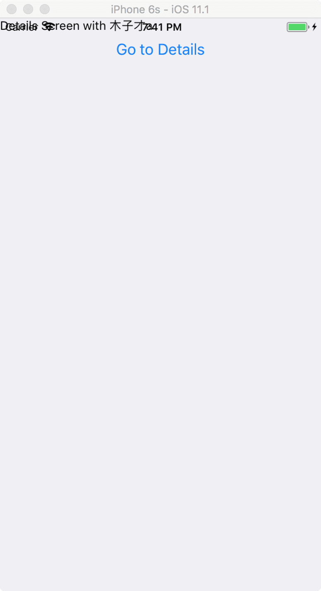

RN react-navigation 的使用
简单代码：
import React, { Component } from 'react';
import {
Platform,
StyleSheet,
Text,
View,
Image,
Button,
} from 'react-native';
import { StackNavigator } from 'react-navigation';
class HomeScreen extends React.Component {
render() {
return (
<View style={{ flex: 1, alignItems: 'center', justifyContent: 'center' }}>
<Text>Home Screen</Text>
<Button
title="Go to Details"
onPress={() => this.props.navigation.navigate('Details',{content:'木子才a'})}
/>
</View>
);
}
}
class DetailsScreen extends React.Component {
static navigationOptions = ({ navigation }) => ({
header: null,
title: `Chat with ${navigation.state.params.content}`,
});
render() {
const { params } = this.props.navigation.state;
return (
<View>
<Text>Details Screen with {params.content}</Text>
<Button
title="Go to Details"
onPress={() => this.props.navigation.goBack()}
/>
</View>
);
}
}
const RootStack = StackNavigator(
{
Home: {
screen: HomeScreen,
},
Details: {
screen: DetailsScreen,
},
},
{
initialRouteName: 'Home',
}
);
export default class App extends Component<Props> {
constructor(props) {
super(props);
}
render() {
return <RootStack />;
}
}
const styles = StyleSheet.create({
container: {
flex: 1,
justifyContent: 'center',
alignItems: 'center',
backgroundColor: '#F5FCFF',
},
});

针对当前页面设置navigation： 可以在当前页面下，设置navigation：
static navigationOptions = ({ navigation }) => ({
header: null,
title: `Chat with ${navigation.state.params.content}`,
});
header，设置 null，就可以把导航头隐藏。 title，导航标题
StackNavigator
navigationOptions：配置StackNavigator的一些属性。
title：标题，如果设置了这个导航栏和标签栏的title就会变成一样的，不推荐使用
header：可以设置一些导航的属性，如果隐藏顶部导航栏只要将这个属性设置为null
headerTitle：设置导航栏标题，推荐
headerBackTitle：设置跳转页面左侧返回箭头后面的文字，默认是上一个页面的标题。可以自定义，也可以设置为null
headerTruncatedBackTitle：设置当上个页面标题不符合返回箭头后的文字时，默认改成"返回"
headerRight：设置导航条右侧。可以是按钮或者其他视图控件
headerLeft：设置导航条左侧。可以是按钮或者其他视图控件
headerStyle：设置导航条的样式。背景色，宽高等
headerTitleStyle：设置导航栏文字样式
headerBackTitleStyle：设置导航栏‘返回’文字样式
headerTintColor：设置导航栏颜色
headerPressColorAndroid：安卓独有的设置颜色纹理，需要安卓版本大于5.0
gesturesEnabled：是否支持滑动返回手势，iOS默认支持，安卓默认关闭
screen：对应界面名称，需要填入import之后的页面
mode：定义跳转风格
card：使用iOS和安卓默认的风格
modal：iOS独有的使屏幕从底部画出。类似iOS的present效果
headerMode：返回上级页面时动画效果
float：iOS默认的效果
screen：滑动过程中，整个页面都会返回
none：无动画
cardStyle：自定义设置跳转效果
transitionConfig： 自定义设置滑动返回的配置
onTransitionStart：当转换动画即将开始时被调用的功能
onTransitionEnd：当转换动画完成，将被调用的功能
path：路由中设置的路径的覆盖映射配置
initialRouteName：设置默认的页面组件，必须是上面已注册的页面组件
initialRouteParams：初始路由参数
TabNavigator
screen：和导航的功能是一样的，对应界面名称，可以在其他页面通过这个screen传值和跳转。
navigationOptions：配置TabNavigator的一些属性
title：标题，会同时设置导航条和标签栏的title
tabBarVisible：是否隐藏标签栏。默认不隐藏(true)
tabBarIcon：设置标签栏的图标。需要给每个都设置
tabBarLabel：设置标签栏的title。推荐
导航栏配置
tabBarPosition：设置tabbar的位置，iOS默认在底部，安卓默认在顶部。（属性值：'top'，'bottom'）
swipeEnabled：是否允许在标签之间进行滑动
animationEnabled：是否在更改标签时显示动画
lazy：是否根据需要懒惰呈现标签，而不是提前，意思是在app打开的时候将底部标签栏全部加载，默认false,推荐为true
trueinitialRouteName： 设置默认的页面组件
backBehavior：按 back 键是否跳转到第一个Tab(首页)， none 为不跳转
tabBarOptions：配置标签栏的一些属性iOS属性
activeTintColor：label和icon的前景色 活跃状态下
activeBackgroundColor：label和icon的背景色 活跃状态下
inactiveTintColor：label和icon的前景色 不活跃状态下
inactiveBackgroundColor：label和icon的背景色 不活跃状态下
showLabel：是否显示label，默认开启 style：tabbar的样式
labelStyle：label的样式安卓属性
activeTintColor：label和icon的前景色 活跃状态下
inactiveTintColor：label和icon的前景色 不活跃状态下
showIcon：是否显示图标，默认关闭
showLabel：是否显示label，默认开启 style：tabbar的样式
labelStyle：label的样式 upperCaseLabel：是否使标签大写，默认为true
pressColor：material涟漪效果的颜色（安卓版本需要大于5.0）
pressOpacity：按压标签的透明度变化（安卓版本需要小于5.0）
scrollEnabled：是否启用可滚动选项卡 tabStyle：tab的样式
indicatorStyle：标签指示器的样式对象（选项卡底部的行）。安卓底部会多出一条线，可以将height设置为0来暂时解决这个问题
labelStyle：label的样式
iconStyle：图标样式
DrawerNavigator
DrawerNavigatorConfig
drawerWidth - 抽屉的宽度
drawerPosition - 选项是左或右。 默认为左侧位置
contentComponent - 用于呈现抽屉内容的组件，例如导航项。 接收抽屉的导航。 默认为DrawerItems
contentOptions - 配置抽屉内容
initialRouteName - 初始路由的routeName
order - 定义抽屉项目顺序的routeNames数组。
路径 - 提供routeName到路径配置的映射，它覆盖routeConfigs中设置的路径。
backBehavior - 后退按钮是否会切换到初始路由？ 如果是，设置为initialRoute，否则为none。 默认为initialRoute行为
DrawerItems的contentOptions属性
activeTintColor - 活动标签的标签和图标颜色
activeBackgroundColor - 活动标签的背景颜色
inactiveTintColor - 非活动标签的标签和图标颜色
inactiveBackgroundColor - 非活动标签的背景颜色
内容部分的样式样式对象
labelStyle - 当您的标签是字符串时，要覆盖内容部分中的文本样式的样式对象